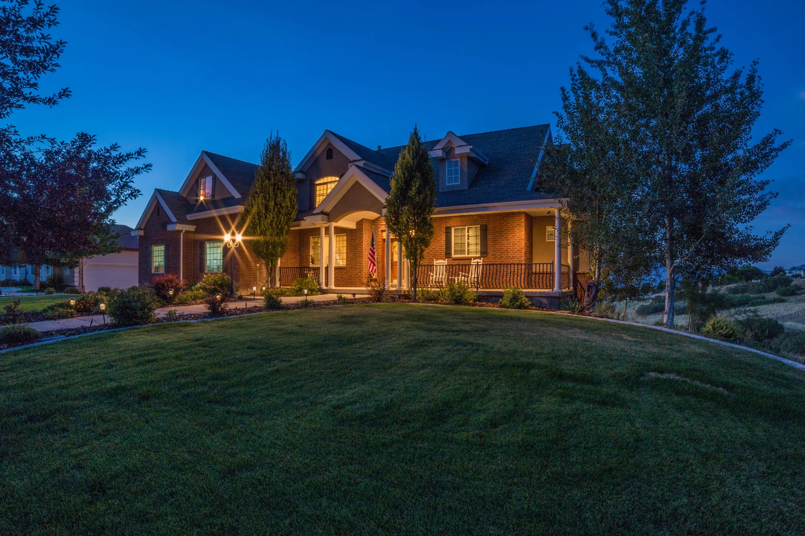
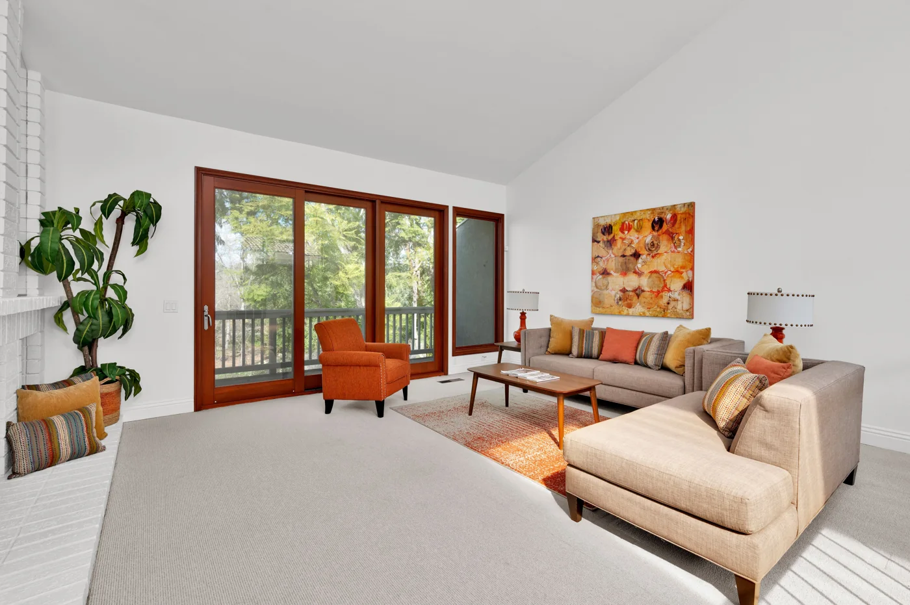

Property photography
Interior and exterior imagery that gives rooms, architectural details, and natural light room to speak.
CompositionVisual storytellingClient communication

Photography, film, and aerial imagery that help people see a place—and imagine their next chapter.
I’m Tahj Foster, the founder of Geaux Flight Media and an Information Systems and Decision Sciences student at LSU.
I bring visual storytelling and technical problem-solving to real estate media. My work connects photography, drone imagery, 360-degree tours, and photogrammetry to a practical goal: helping people understand a property.
Behind the camera, I’m interested in the systems that make good work repeatable—from organizing media to understanding what a client needs.
A property has more than one story to tell. I work across the tools and perspectives needed to bring it into focus.
Interior and exterior imagery that gives rooms, architectural details, and natural light room to speak.
A wider view of a property, its setting, and its relationship to the surrounding area.
Walkthrough videos and 360-degree experiences that help viewers explore how a space connects.
Photogrammetry turns overlapping photographs into 3D models. My IT and coursework experience adds a practical foundation in systems and data.

Geaux Flight is where my creative work meets my interest in information systems. Explore the thinking behind a property media workflow—from understanding the brief to making a space easier to explore.
Inside the Geaux Flight projectReal estate photography, aerial imagery, walkthrough experiences, and photogrammetry for understanding property and space.
Technology servicing, equipment upgrades, software updates, and hardware and network troubleshooting for a school environment.
Have a property to capture, a project to discuss, or an opportunity in business and technology? I’d like to hear about it.